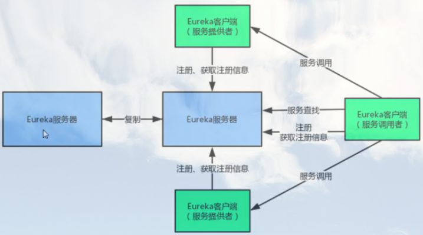
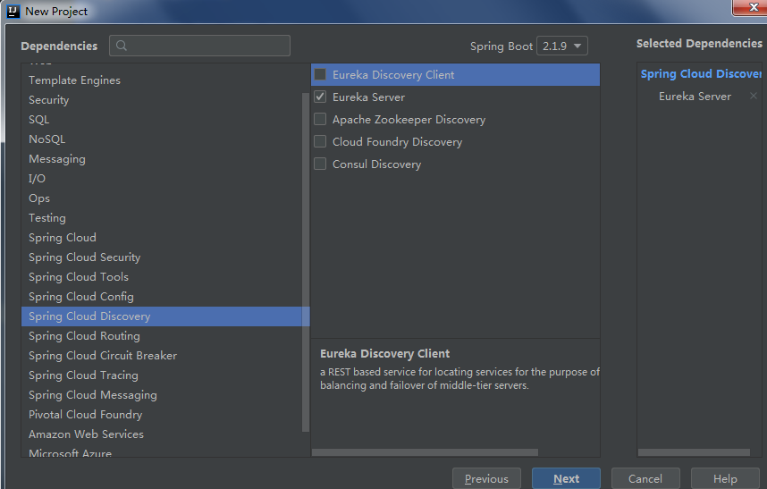
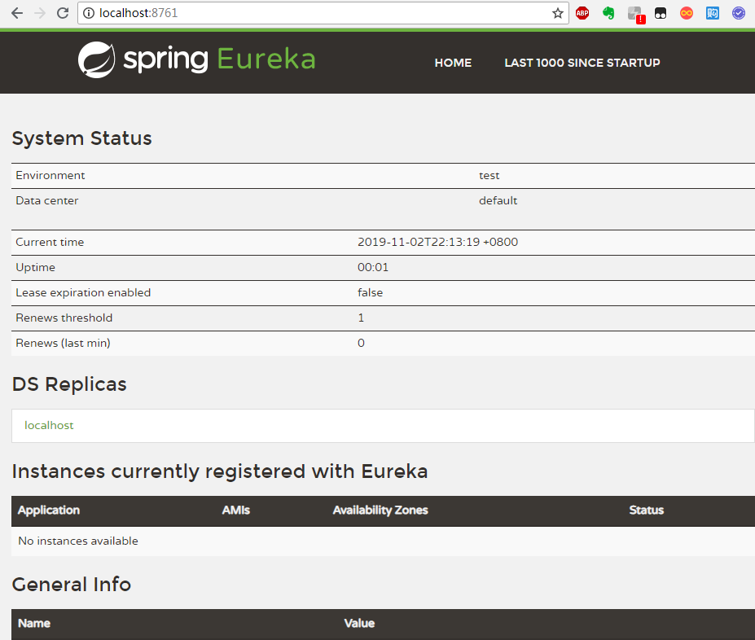
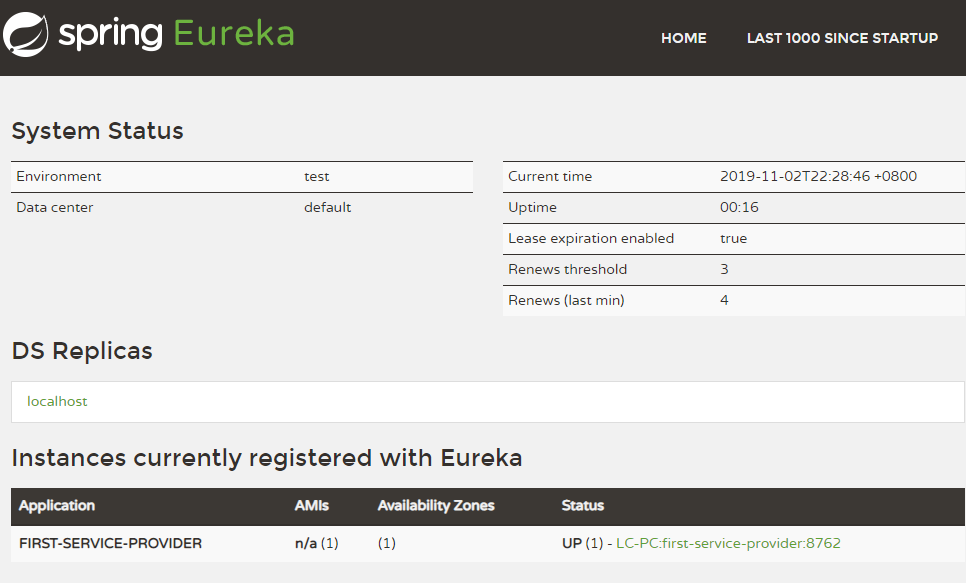
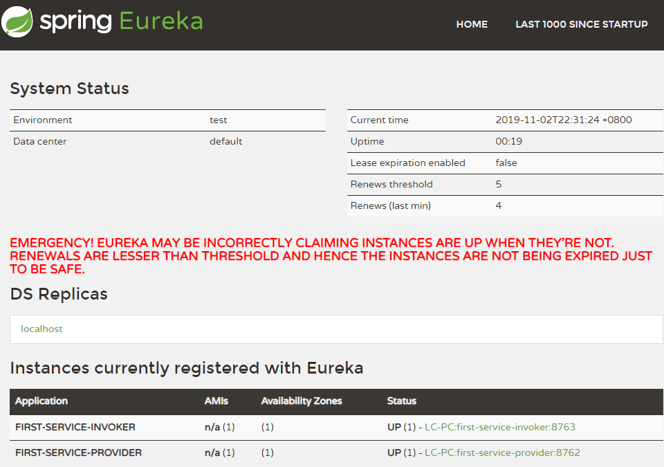
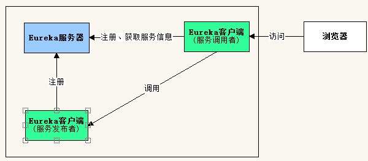

Eureka是Netflix开发的服务发现框架，本身是一个基于REST的服务，主要用于定位运行在AWS域中的中间层服务，以达到负载均衡和中间层服务故障转移的目的。
SpringCloud将它集成在其子项目spring-cloud-netflix中，以实现SpringCloud的服务发现功能。
Eureka概述
Eureka包含两个组件：Eureka Server（服务器，或服务注册中心）和Eureka Client（客户端）。
Eureka Server提供服务注册服务，各个节点启动后，会在Eureka Server中进行注册，这样EurekaServer中的服务注册表中将会存储所有可用服务节点的信息，服务节点的信息可以在界面中直观的看到。
Eureka Client是一个java客户端，用于简化与Eureka Server的交互，客户端同时也就是一个内置的、使用轮询(round-robin)负载算法的负载均衡器。
在应用启动后，将会向Eureka Server发送心跳,默认周期为30秒，如果Eureka Server在多个心跳周期内没有接收到某个节点的心跳，Eureka Server将会从服务注册表中把这个服务节点移除(默认90秒)。
Eureka Server之间通过复制的方式完成数据的同步，Eureka还提供了客户端缓存机制，即使所有的Eureka Server都挂掉，客户端依然可以利用缓存中的信息消费其他服务的API。
综上，Eureka通过心跳检查、客户端缓存等机制，确保了系统的高可用性、灵活性和可伸缩性。

Eureka的服务发布与调用简单例子
一、构建服务器（服务注册中心）
1、创建项目
开发工具：IntelliJ IDEA 2019.2.2
IDEA中创建一个新的SpringBoot项目，名称为“first-ek-server”，SpringBoot版本选择2.1.9，在选择Dependencies(依赖)的界面勾选Spring Cloud Discovery -> Eureka Server。

创建完成后的pom.xml配置文件自动添加SpringCloud最新稳定版本依赖，当前为Greenwich.SR3。
加入的spring-cloud-starter-eureka-server会自动引入spring-boot-starter-web，因此只需加入该依赖，项目就具有Web容器的功能。
pom.xml完整内容如下：
<?xml version="1.0" encoding="UTF-8"?>
<project xmlns="http://maven.apache.org/POM/4.0.0" xmlns:xsi="http://www.w3.org/2001/XMLSchema-instance"
xsi:schemaLocation="http://maven.apache.org/POM/4.0.0 https://maven.apache.org/xsd/maven-4.0.0.xsd">
<modelVersion>4.0.0</modelVersion>
<parent>
<groupId>org.springframework.boot</groupId>
<artifactId>spring-boot-starter-parent</artifactId>
<version>2.1.9.RELEASE</version>
<relativePath/> <!-- lookup parent from repository -->
</parent>
<groupId>com.example</groupId>
<artifactId>first-ek-server</artifactId>
<version>0.0.1-SNAPSHOT</version>
<name>first-ek-server</name>
<description>Demo project for Spring Boot</description>
<properties>
<java.version>1.8</java.version>
<spring-cloud.version>Greenwich.SR3</spring-cloud.version>
</properties>
<dependencies>
<dependency>
<groupId>org.springframework.cloud</groupId>
<artifactId>spring-cloud-starter-netflix-eureka-server</artifactId>
</dependency>
<dependency>
<groupId>org.springframework.boot</groupId>
<artifactId>spring-boot-starter-test</artifactId>
<scope>test</scope>
</dependency>
</dependencies>
<dependencyManagement>
<dependencies>
<dependency>
<groupId>org.springframework.cloud</groupId>
<artifactId>spring-cloud-dependencies</artifactId>
<version>${spring-cloud.version}</version>
<type>pom</type>
<scope>import</scope>
</dependency>
</dependencies>
</dependencyManagement>
<build>
<plugins>
<plugin>
<groupId>org.springframework.boot</groupId>
<artifactId>spring-boot-maven-plugin</artifactId>
</plugin>
</plugins>
</build>
</project>2、修改配置application.yml
设置服务端口、服务器注册开关。
默认情况下，服务器启动时会把自己当做一个客户端，去注册Eureka服务器，并且会到Eureka服务器抓取注册信息。
但这里只是作为一个服务器，而不是服务的提供者（客户端），因此设置属性值为flase，否则启动时会在控制台看到异常信息。
Caused by: java.net.ConnectException: Connection refused: connect
com.netflix.discovery.shared.transport.TransportException: Cannot execute request on any known server
server:
port: 8761
eureka:
client:
register-with-eureka: false
fetch-registry: false3、修改启动类代码FirstEkServerApplication.java
增加注解@EnableEurekaServer，声明这是一个Eureka服务器。
package com.example.firstekserver;
import org.springframework.boot.SpringApplication;
import org.springframework.boot.autoconfigure.SpringBootApplication;
import org.springframework.cloud.netflix.eureka.server.EnableEurekaServer;
@SpringBootApplication
@EnableEurekaServer
public class FirstEkServerApplication {
public static void main(String[] args) {
SpringApplication.run(FirstEkServerApplication.class, args);
}
}启动服务，浏览器访问http://localhost:8761，页面显示Eureka服务器控制台，里面有服务实例列表，当前是空的。

二、编写服务提供者（生产者）
1、创建项目
IDEA中创建一个新的SpringBoot项目，除了名称为“first-ek-service-provider”，其它步骤和上面一样，pom.xml的依赖项也一样。
2、修改配置application.yml
配置应用名称为 first-service-provider，该服务将会被注册到服务器 http://localhost:8761/eureka/
server:
port: 8762
spring:
application:
name: first-service-provider
eureka:
instance:
hostname: localhost
client:
serviceUrl:
defaultZone: http://localhost:8761/eureka/3、添加类 User.java
package com.example.firstekserviceprovider;
public class User {
private Integer id;
private String name;
public User(Integer id, String name){
this.id = id;
this.name = name;
}
public Integer getId() {
return id;
}
public void setId(Integer id) {
this.id = id;
}
public String getName() {
return name;
}
public void setName(String name) {
this.name = name;
}
}4、添加控制器 UserController.java
提供一个简单的REST服务。
package com.example.firstekserviceprovider;
import org.springframework.http.MediaType;
import org.springframework.web.bind.annotation.PathVariable;
import org.springframework.web.bind.annotation.RequestMapping;
import org.springframework.web.bind.annotation.RequestMethod;
import org.springframework.web.bind.annotation.RestController;
@RestController
public class UserController {
@RequestMapping(value = "/user/{userId}", method = RequestMethod.GET, produces = MediaType.APPLICATION_JSON_VALUE)
public User findUser(@PathVariable("userId") Integer userId){
User user = new User(userId, "gdjlc");
return user;
}
}5、修改启动类代码FirstEkServerApplication.java
添加注解@EnableEurekaClient，声明这是一个Eureka客户端。
package com.example.firstekserviceprovider;
import org.springframework.boot.SpringApplication;
import org.springframework.boot.autoconfigure.SpringBootApplication;
import org.springframework.cloud.netflix.eureka.EnableEurekaClient;
@SpringBootApplication
@EnableEurekaClient
public class FirstEkServiceProviderApplication {
public static void main(String[] args) {
SpringApplication.run(FirstEkServiceProviderApplication.class, args);
}
}启动服务，浏览器访问http://localhost:8761，服务实例列表已经增加了FIRST-SERVICE-PROVIDER。

三、编写服务调用者（消费者）
调用者是指同样注册到 Eureka的客户端，来调用其它客户端发布的服务。
1、创建项目
IDEA中创建一个新的SpringBoot项目，除了名称为“first-ek-service-invoker”，其它步骤和依赖项和上面都一样。
2、修改配置application.yml
配置应用名称为 first-service-invoker，该服务将会被注册到服务器 http://localhost:8761/eureka/
server:
port: 8763
spring:
application:
name: first-service-invoker
eureka:
instance:
hostname: localhost
client:
serviceUrl:
defaultZone: http://localhost:8761/eureka/3、添加控制器 InvokerController.java
在控制器中，配置了RestTemplate的Bean，RestTemplate是spring-web模块下面的类，主要用来调用REST服务。
本身不具有调用分布式服务的能力，但被@LoadBalanced注解修饰后，这个RestTemplate实例就具有访问调用分布式服务的能力。
另外，下面调用服务，通过服务名称进行调用。
package com.example.firstekserviceinvoker;
import org.springframework.cloud.client.loadbalancer.LoadBalanced;
import org.springframework.context.annotation.Bean;
import org.springframework.context.annotation.Configuration;
import org.springframework.http.MediaType;
import org.springframework.web.bind.annotation.RequestMapping;
import org.springframework.web.bind.annotation.RequestMethod;
import org.springframework.web.bind.annotation.RestController;
import org.springframework.web.client.RestTemplate;
@RestController
@Configuration
public class InvokerController {
@Bean
@LoadBalanced
public RestTemplate getRestTemplate(){
return new RestTemplate();
}
@RequestMapping(value = "/router", method = RequestMethod.GET, produces = MediaType.APPLICATION_JSON_VALUE)
public String router(){
RestTemplate restTpl = getRestTemplate();
//根据应用名称调用服务
String json = restTpl.getForObject("http://first-service-provider/user/1", String.class);
return json;
}
}4、修改启动类代码FirstEkServiceInvokerApplication.java
添加注解@EnableDiscoveryClient，使得服务调用者可以去Eureka中发现服务。
说明：@EnableDiscoveryClient注解已经包含了@EnableEurekaClient的功能。
package com.example.firstekserviceinvoker;
import org.springframework.boot.SpringApplication;
import org.springframework.boot.autoconfigure.SpringBootApplication;
import org.springframework.cloud.client.discovery.EnableDiscoveryClient;
@SpringBootApplication
@EnableDiscoveryClient
public class FirstEkServiceInvokerApplication {
public static void main(String[] args) {
SpringApplication.run(FirstEkServiceInvokerApplication.class, args);
}
}启动服务，浏览器访问http://localhost:8761，服务实例列表又增加了FIRST-SERVICE-INVOKER。

备注：上面的红色粗体警告信息表示Eureka已经进入自我保护模式，暂时不用理会。
浏览器访问http://localhost:8763/router，页面输出：
{"id":1,"name":"gdjlc"}可知，成功调用了服务提供者的服务。
总结，本例子的结构图：
